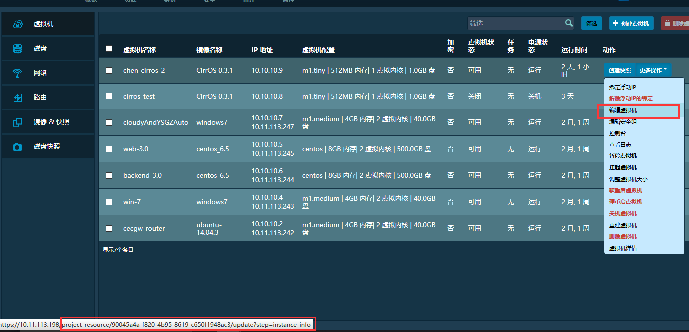
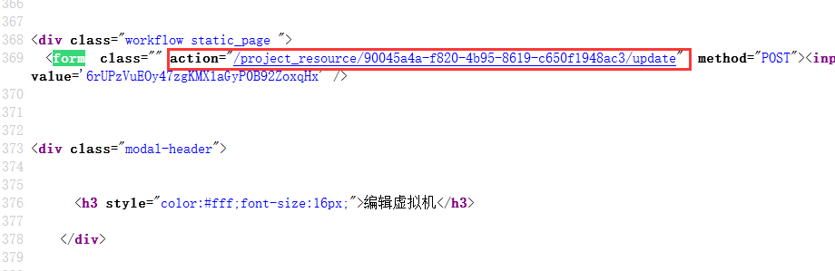

12. django通用视图：一个小问题引发的思考¶
Note
在分析openstack web UI方式启动虚拟机时，发现一个小问题。 其实也不算是问题，而是知识掌握不到位引起的。
该问题涉及到的知识点在django book有完整介绍，该书自己应该读过2+ 遍，但是由于缺失代码实践的支撑，掌握并不是很牢靠。因此，应该把理论和实践结合起来。
纸上得来终觉浅，绝知此事要躬行！
12.1. 问题¶
下面以“更新虚拟机”图例介绍。
登录horizon，打开虚拟机资源列表。尝试更新某个虚拟机的信息：
点击编辑虚拟机
该页面源码，可知点击编辑虚拟机是一个超链接，那么根据django URLconf系统，会引起view处理函数的调用。

点击虚拟机对应的超链接
根据URLconf映射，会调用UpdateView.as_view()函数。

urls.py映射
编辑虚拟机信息，保存，会提交表单。触发action，再次发送post类型的request。

点击保存，触发表单提交
触发表单提交对应的post请求
{kind=link}
{kind=link}
于是问题来了:
之前点击”编辑虚拟机”触发http请求的URL和点击”保存”提 交表单触发请求的URL一样。那么点击保存之后，是不是会再一次调用UpdateView，弹出表单?
此外，一般在view处理函数中，会通过request.method对HTTP GET和POST请求分别处理。 而上面两个http请求中，超链接对应的一定是GET请求，提交表单已经指定是POST请求，那么UpdateView 对两种请求是如何区分的，处理代码又在哪里？

一般的view视图需要区分GET和POST请求并分别处理
12.2. 分析¶
从urls.py中的views.UpdateView.as_view()可知，这是一个通用视图。
Important
最初 django 的视图都是用函数实现的，后来开发出一些通用视图函数， 以取代某些常见的重复性代码。通用视图就像是一些封装好的处理器， 使用它们的时候只须要给出特定的参数集即可，不必关心具体的实现。各种通 用视图的参考参见：https://docs.djangoproject.com/en/1.6/ref/class-based-views/
因为 URLConf 仍然使用“给一个可调用对象传入 HttpRequest ， 并期待其返回一个 HttpResponse”这样的逻辑，所以对于类视图，必须 设计一个可调用的接口。这就是类视图的 as_view() 类方法。他接受 request，并 实例化类视图，接着调用实例的 dispatch() 方法。这个方法会依据 request 的请求 类型再去调用实例的对应同名方法，并把 request 传过去，如果没有对应的方法，就引 发一个 HttpResponseNotAllowed 异常。（可以捕捉这个异常用以返回一个 404）值 得注意的是，这个（比如 get）方法的返回值和普通的视图函数的返回值没有什么不同， 这意味着，http shortcuts（render_to_response之类的）和 TemplateResponse 在 类视图里也是有效的。
django 提供了一系列现成的类视图，他们都继承自一个 View 基 类（django.views.generic.base.View）。在这个基类里实现了与 URLs 的接口（as_view）、请求方法匹配（dispatch）和一些其他的基本功能。 比如 RedirectView 实现了一个简单的 HTTP 重定向，TemplateView 给 View 添加了一个渲染模板的功能。
通用视图一个很pythonic的地方是：子类里面定义get post方法，就不需要写类似这种东西了。
if request.method.lower() == 'get': do_something() else: do_otherthing()
12.2.1. WorkflowView类GET和POST方法¶
现在我们来分析，UpdateView如何利用通用视图来处理http请求的。

UpdateView 继承 WorkflowView
我们来看看WorkflowView类，里面有两个关键函数，get和POST方法。分别用来处理GET和POST请求：

WorkflowView类的GET和POST方法
WorkflowView类的GET和POST方法逻辑是很显然的：
- 对于GET请求(点击编辑虚拟机超链接)，则加载模板，显示页面表单；
- 对于POST请求，比如点击表单的保存按钮，则检查表单的有效性，如果有效，则进行页面重定向； 如果表单信息校验失败，如输入信息不合法等，则会重新加载模板显示表单。
12.2.2. 通用视图as_view()处理逻辑¶
下面分析通用视图函数，是怎么区分GET和POST请求的。(代码路径为：django/views/generic/base.py)

通用视图as_view()方法
可以看到，as_view 函数返回一个闭包 view() ，对于http request，它实际上将调用view包装函数，然后进行dispatch处理。

dispatch调用
为什么不需要写if else判断，而在子类里面定义get post即可，可以看到是下面的 dispatch方法做了通用的处理。在dispatch方法中，根据request.method获取同名 处理函数(子类一般会重写)。然后直接调用返回！